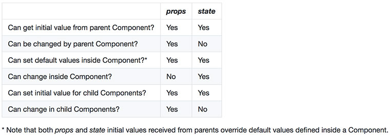
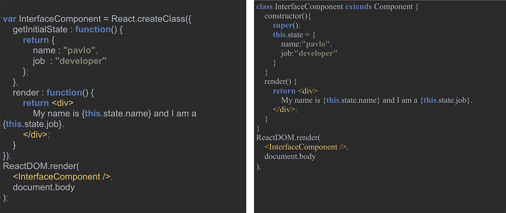
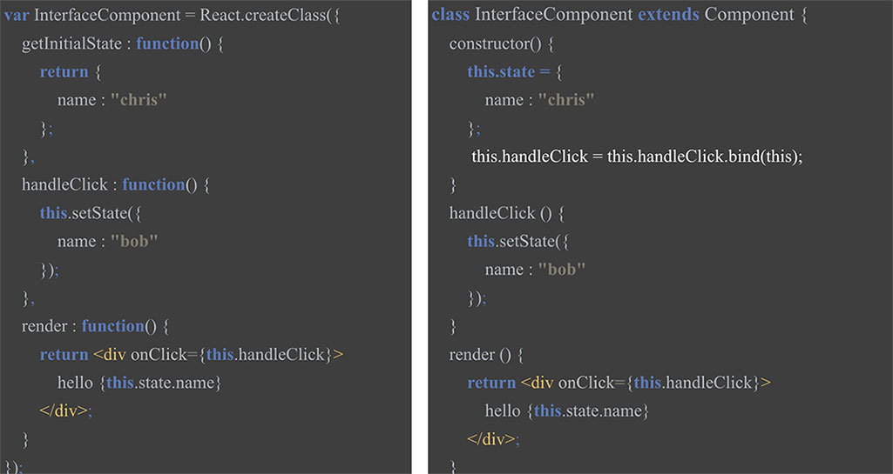
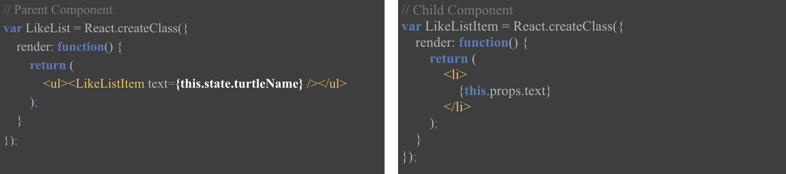
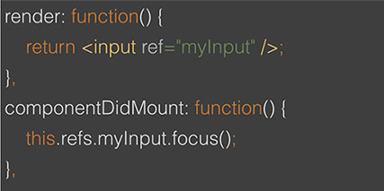
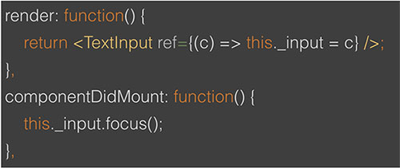
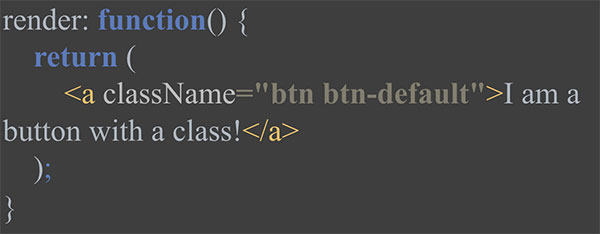
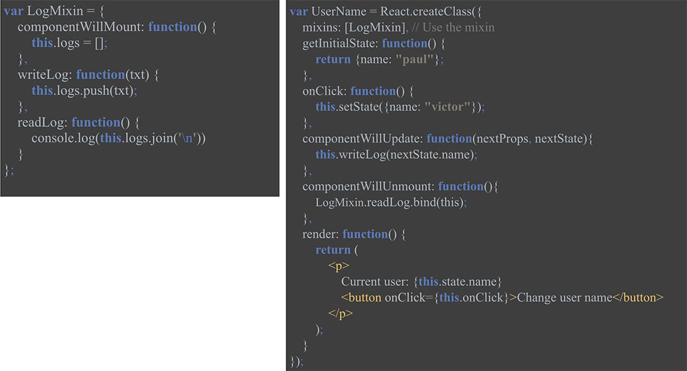
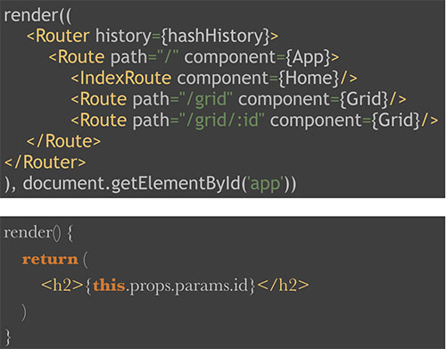

React.js overview: state and props, mixins, router
by Alyona Pysarenko
Agenda
State and props
Mixins and pure render
Router
Common ground for state and props
Both state and props:
are plain JS objects
changes trigger a render update
are deterministic. If Component generates different outputs for the same combination of props and state then you're doing something wrong
Difference between state and props
Props
are immutable
are used to pass data down from view-controller
have better performance
come to the component from parent components
are initialization data
can be validated, state – not
State
is mutable
should be managed in your view-controller
has worse performance
should not be accessed from child components
is initialized inside the component
is internal data-set
Changing state and props

Should Component have state?
state is optional, state increases complexity and reduces predictability, a Component without state is preferable, should avoid having too many Stateful Components
Component types
Stateless — Only props, no state. All logic revolves around received props. This makes them very easy to follow and test.
Stateful — Both props and state. Also called state managers. They are in charge of client-server communication (XHR, web sockets, etc.), processing data and responding to user events.
What should go in State?
Data that a component's event handlers may change to trigger a UI update
Minimal possible representation of logic
What shouldn't go in State?
Duplicated data from props
React components
Computed data (this.state.list.length)
Set initial state

Set state

Binding
Bind in component (anti-pattern)
Using arrow-functions
Bind in constructor
Arrow-function as method
React props
Props are immutable parameters passed by a parent component to a child sub-component. A component can not alter its #props object (and should not alter the props themselves), the only way for props to change is for a new render to be triggered, where the parent component passes new props to the child

propTypes and refs
How to make sure that component has at least one child?
React supports a very special property that can be attached to any component that is output from render()
It is always guaranteed to be the proper instance, at any point in time
2 Types: Callback Ref, String Ref
Refs
String Ref

Callback Ref

Callback will be executed immediately after the component is mounted
classname
Because class is a reserved JavaScript keyword, to set the class of an element you will need to use the className property name instead

Mixin
Components are the best way to reuse code in React, but sometimes very different components may share some common functionality. These are sometimes called cross-cutting concerns. React provides mixins to solve this problem
Mixin has access to lifecycle methods
Unfortunately ES6 launched without any mixin support. Therefore, there is no support for mixins when you use React with ES6 classes
With ES7 coming, you can also use Decorators instead of mixins (@Decorator)
Mixins
How to create and use:

Router
React.js itself doesn’t provide any routing utilities, but there’re several free, open-sources libs that works perfectly well
We will discuss react-router which has been developed by React.js team: https://github.com/reactjs/react-router
React Router keeps your UI in sync with the URL. It has a simple API with powerful features like lazy code loading, dynamic route matching, and location transition handling built right in
Router path
A route path is a string pattern that is used to match a URL (or part of one)
Route paths are interpreted literally, except next special symbols:
:paramName – matches a URL segment up to the next /, ?, or #. The matched string is called a param
() – wraps a portion of the URL that is optional
* – matches all characters (non-greedy) up to the next character in the pattern, or to the end of the URL if there is none, and creates a splat param
** - matches all characters (greedy) until the next /, ?, or # and creates a splat param
Router path example
Router configuration

Dynamic routing
No imports required!
First load is very fast!
Pair it with webpack chunks and your project will be as fast as can be!